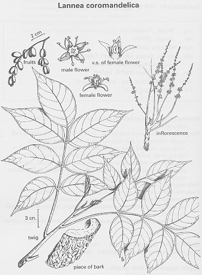

|
ECONOMICALLY
IMPORTANT PLANTS OF INDIA |
| Under-utilized Food and Fodder species and their wild relatives | Contributed by Ms.M.L Annapurna And Dr. Dhanapal, UAS, Bangalore |
Lannea coromandelica
Taxonomic Details

----- Correct Name
----- Classification
----- Synonyms
----- Common Names
Other Biological Details
----- Habit and Habitat
----- Diagnostic Features
----- Reproductive Biology
---------- Breeding System
---------- Phenology
---------- Pollinators
---------- Seed Biology
----------Seed Germination
------ Cultivation
----- Major Pests and Diseases
Economic Potential and Uses
----- Parts Used
----- Uses
----- Harvesting Practices
----- Produce and Products
----- Chemistry
----- Processing Techniques
----- Other uses
----- Economic Potential to the
Country
----- Export Potential
Miscellaneous Information
Literature
HABIT & HABITAT:
A moderate sized to large deciduous tree with spreading
crown and stout branches, attaining a height up to 24 m. found throughout the
greater part of India and the Andaman Islands.
Latitude: 0-74,
Longitude: 0-73,
Altitude range: 0-2000 m
Temperature : 0-32 degrees,
Rainfall Maximum: 0-35cms
Found in Avenues, bunds of Fields, outskirts of Wet Deciduous forests in lower ghats, cultivated, Deciduous forest, dry deciduous forest, dry localities, dry mixed forests, forests, hedges, hill forests, hill slopes, hotter parts, midlands, along rivers and streams.
BioticZone: Foot of Himalayas, Himalaya, Khasia hills, Konkan plain, Peninsular India, SubHimalayan tracts, Temperate Western Himalaya, West Coast and Western Ghats.
Availability :
Country: Burma, E.Asia, India, Indochina, Indomalaysia, Malayasia, Myamnar,
S. E. Asia and Sri Lanka.
Misc: Ambevani, Anekad, Baghnadi, Bardez, Betim, Bettageri, Bhati, Birehi, Bomdila, Budbhum, Canacona, Chamundi hills, Changlare, Chelama, Chilpi, Chindanoor, Chiribi Reserve Forest, Corbett National Park, Dam Site, Deodongra, Deogad, Deogri Reserve Forest, Devarayanadurga, Dubare, E.Gondwakadi Forest, Mukutban, Elephanta island, Extending to Assam, Gangapur Reserve Forest, Gani, Ghati R.F, Ghati R.F., Hattikuni Dam, Hissanaykanbetta, Hollong, Jamunpada forest, Jogimatti (State Forest), Kakanakote, Kalsubai hill, Karjat, Karla, Katalgaon forest opposite Saptashringi dongar, Katghora, Kerude, Khanale, Khandala, Khuria, kudal, Loharia, Loharia forest, Mahaballeshwar, Malaidah, Malgarh R.F., Maloli forests, math forest, Matheran, Morna,Motnali Reserve Forest, Mount Abu, Nagri, Nallamalais, Nandagaon, Nandprayag, Narsingi, Ordofond, Pen, Phiski, Racherla, Regional Research Station, Brahmavar, Roha, Rudraprayag area, Salkumar, Sanegaon, Sanguem, Satari, Sawantwadi, Shadipur, Shahabad, Shahanur, Sidh Forests, Sindewadikuran area, Surangai forest, Throughout India, Trombay, vengurla, Vir, Walayar forest and Way to Kannoth.
Zone: Central, East, Islands, North, North East, North West, South and West
zone.
State: Andaman & Nicobar, Andhra Pradesh, Arunachal Pradesh, Bihar, Himachal
Pradesh, Karnataka, Kerala, Madhya Pradesh, Maharashtra, Rajasthan, Tamil Nadu,
Uttar Pradesh and West Bengal.
District: Pargana, Akola, Andaman, Bankura, Banswara, Bastar, Belgaum, Bellary,
Bhopal, Bidar, Bilaspur, Birbhum, Bombay, Cannanore, Chamoli, Champaran, Chandrapur,
Chikmaglore, Chitradurga, Dakshin Kannada, Durg, Gulbarga, Hassan, Hoogli, Hoshangabad,
Howrah, Indore, Jabalpur, Kameng, Kinnaur, Kodagu, Kolar, Kota, Kurnool, Mandi,
Mandla, Medak, Midnapur, Mysore, Nasik, Palaghat, Palani, Pali, Pune, Purulia,
Raichur, Raigad, Raipur, Rajnandgaon, Satara, Seoni, Shimoga, Shivpuri, Sindhudurg,
Sirohi, Surguja, Tonk, Tumkur, Uttar Kannada and Yawatmal.
Taluk: Abu road, Heggadadevanakote, Kudal, Pachmarhi, Sawantwadi and Wadgaon.
Status :
Found in Avenues, bunds of Fields, outskirts
of Wet Deciduous forests in lower ghats, cultivated, Deciduous forest, dry deciduous
forest, dry localities, dry mixed forests, forests, hedges, hill forests, hill
slopes, hotter parts, midlands, along rivers and streams.
DIAGNOSTIC FEATURES
Bark gray or whitish, smooth, exfoliating in irregular rounded
plates; leaves imparipinnate, 25-45 cm. Long, crowded at the ends of branches;
leaflets 7-9, oblong- ovate 7.5-15cm. Flowers small, yellowish or purplish,
unisexual; male fascicled, in slender compound racemes, female in simple pubescent
racemes, fruit red, compressed, reniform, 1 seeded.
Natural reproduction
by seed is generally adequate and occurs only on deep soil. Seeds are dispersed
by birds.
Phenology :
It flowers during February-June (01) and also
during December-May (02)
Seed Biology :
Seed Germination:
Propagated by seeds and branch cuttings.
Seed germination capacity 45%
Natural reproduction by seed is generally adequate and occurs only on deep soil. Seeds are dispersed by birds.
Cultivation:
Propagation by branch cutting
MAJOR PESTS & DISEASES Botrychid beetle and borers
Diseases;
Rust, brown leaf rust and leaf spot
Pests:
Parts used
Wood, bark and leaves.
Uses:
Harvesting
Practices
Produce and Products
Wealth of India, Raw material, Vol VI, 1962, CSIR, New Delhi.
Pp-2